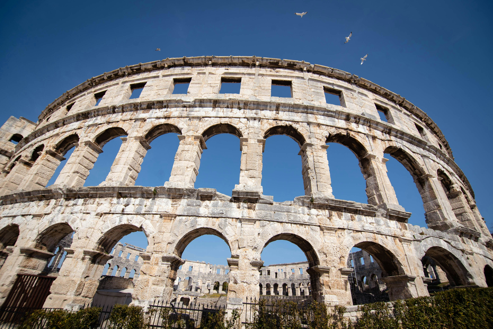
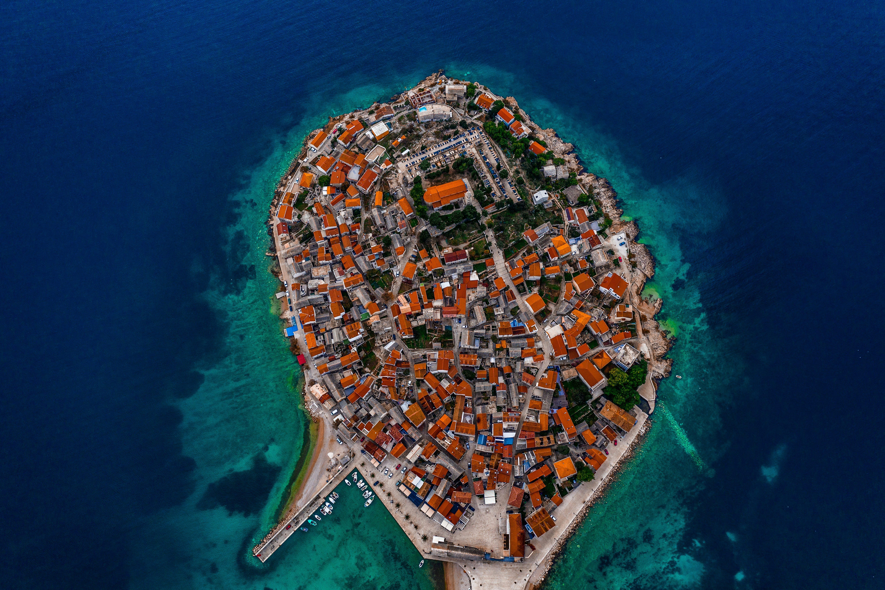
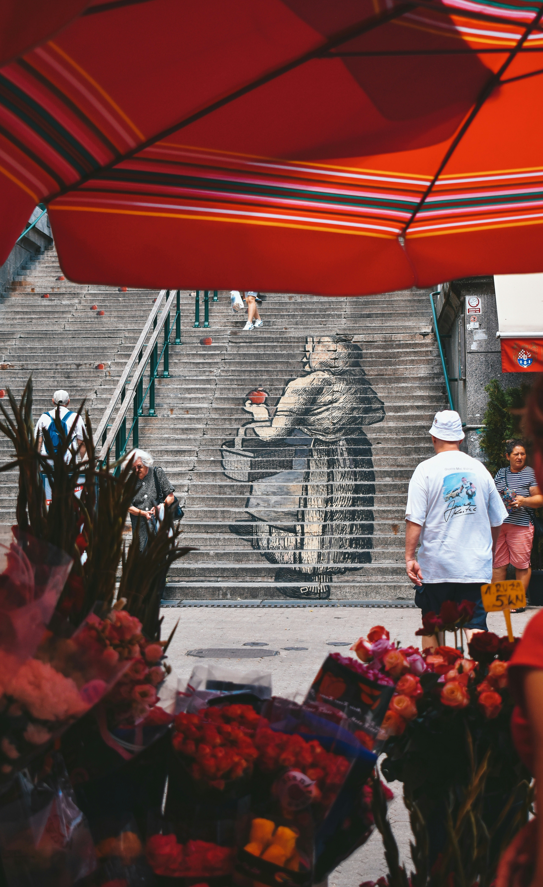
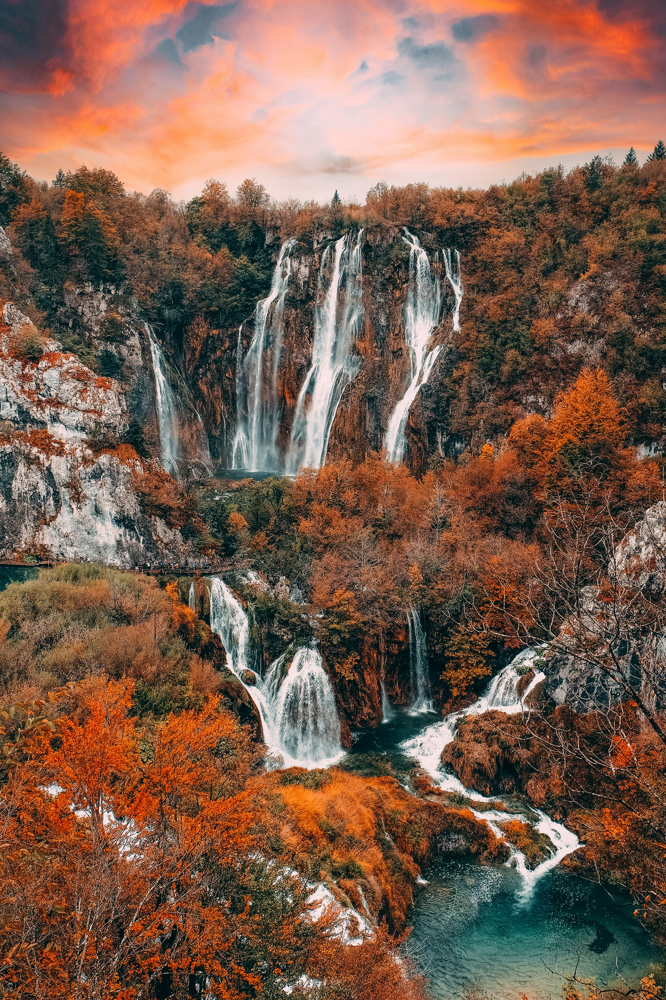
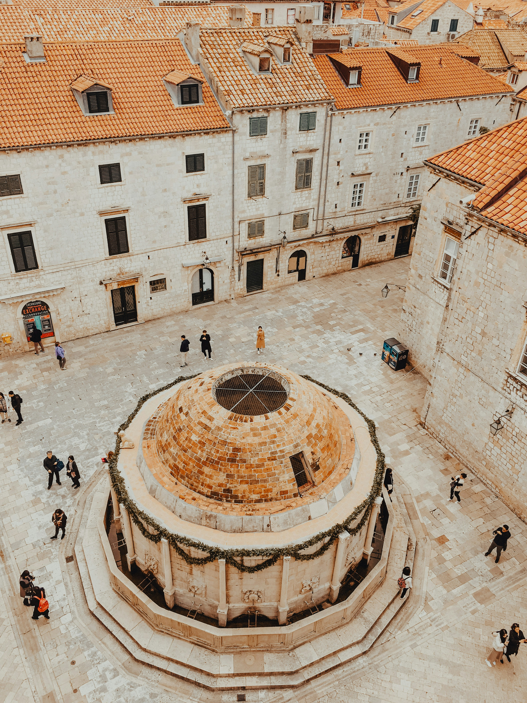

Six Culinary Worlds
The Regions of Croatia
From the truffle forests of Istria to the paprika-fired plains of Slavonia — each region is a complete culinary universe.

Istria & Kvarner
Truffles · Scampi · Malvazija

Dalmatia
Peka · Brudet · Gemišt

Zagreb & Zagorje
Štrukli · Mlinci · Kremšnita

Lika
Lamb · Potatoes · Smoked Meats

Slavonija
Paprika · River Fish · Čobanac

Dubrovnik Region
Zelena Menestra · Bakalar · Dingač